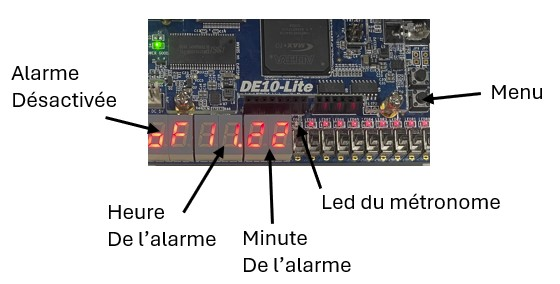

FPGA alarm clock
An alarm clock built from logic gates on a DE10-Lite FPGA board, with two alarms, a stopwatch, a timer, a metronome and a music player.
- Course
- Logic Systems
- School
- EPFL, bachelor's in microengineering
- Team
- 2 students
- Grade
- 6 / 6
- Board
- DE10-Lite

What it does
A menu button cycles through eight functions, and a rotary encoder with a built-in button sets the values; the digit being set blinks. Each of the two alarms rings with a buzzer or one of three tunes. The metronome blinks an LED and beeps, and its tempo can be set with the encoder or by tapping it in.
Architecture
Everything is drawn in Logisim from gates, flip-flops, counters and ROMs, then loaded onto the FPGA. A 16-state machine holds the eight functions and their menu entries. Each button goes through two D flip-flops in a row, which turns a press of any length into a pulse of exactly one clock tick. Hours, minutes and seconds are binary numbers, converted to decimal digits for the seven-segment displays with the Double Dabble algorithm.
Music and metronome
The 24 notes over two octaves come from 24 clocks at different frequencies. Each tune is a ROM with one note per word, read by a counter that runs at the tempo of the tune. The metronome counts down at 128 Hz from the beat period. Converting between BPM and period needs a division, but Logisim's divider doesn't run on the FPGA and our own 16-bit divider was too large. Since the dividend is constant, we replaced it with a 256-entry lookup table.